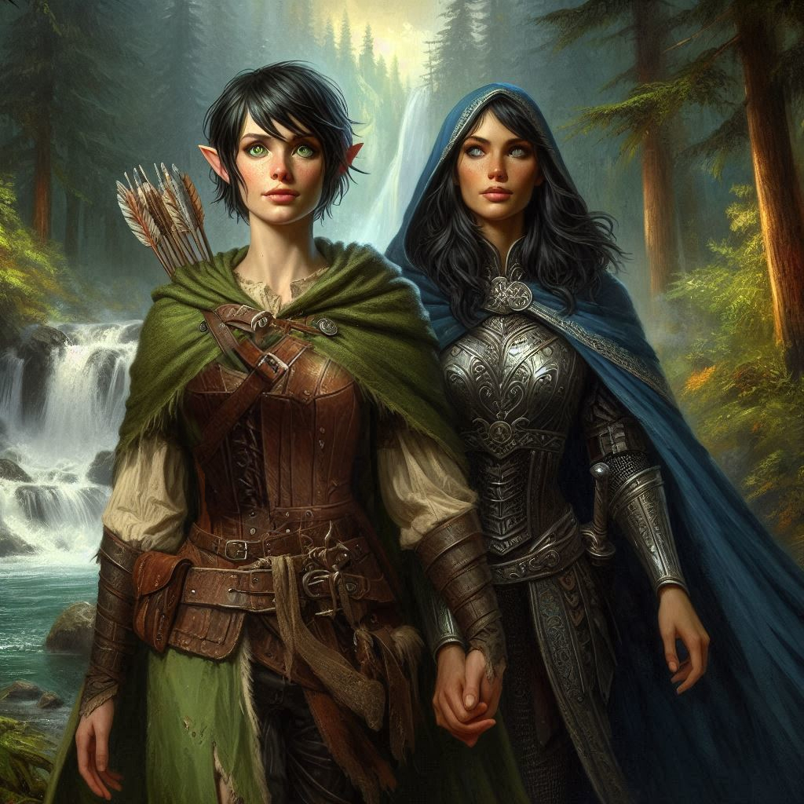

The Charm Spell
The moment her lips touch yours, the world blurs. Princess Hawthorn’s fingers tangle in your short, raven-black hair, pulling you closer. The warmth of her breath, the intoxicating sweetness of her charm spell, wraps around your senses like a thick, honeyed fog. You find yourself pressing against her, deepening the kiss, your heart pounding wildly in your chest. Every doubt, every thought of the mission fades into the heat of her embrace. She’s not just a princess now—she’s everything.
Your body moves of its own accord, hands tracing the contours of her armor, feeling the firm muscle beneath. Her touch on your skin is electrifying, sending sparks of desire through your veins. You know you should pull away, that something about this feels manipulated, yet you can’t resist the way she makes you feel—alive, wanted, powerful.
“I knew you’d come around,” she whispers, her voice low and sultry, her lips brushing the edge of your ear. “You and I are meant for more than what we’ve been told. Together, Kira, we can shape the fate of the Kingdom.”
A flicker of doubt tries to surface in the back of your mind, but Hawthorn’s charm is too strong. You’ve wanted someone to see you this way for so long, to need you, to understand you. And right now, Hawthorn sees you as her equal, her champion, her lover. The part of you still yearning for Jorsh, your childhood flame, feels distant now—like a faded memory.
“What do you want from me?” you ask breathlessly, your forehead resting against hers. The words come out soft, almost hesitant, despite the passion burning inside you.
“I want you by my side,” Hawthorn says, her eyes glowing with ambition. “Together, we can stop Varis. We can find the treasure of Hemlock Caverns and use its power to save the Kingdom. But I need someone strong, someone fearless. I need you, Kira.”
The weight of her words sinks in, even as the spell tugs at your will. You nod, feeling a surge of pride and purpose. After years of feeling lost—your parents abandoning you, Baider’s harsh love, Jorsh’s betrayal—someone is finally offering you a chance to matter, to change the course of history. And perhaps, there’s something more—a future by Hawthorn’s side, not just as her champion, but as her consort.
“I’ll fight for you,” you swear, your voice filled with conviction. “I’ll be your champion.”
The smile Hawthorn gives you is full of triumph, her grip on your waist tightening as she pulls you into another kiss. This time, it’s softer, more deliberate. When she pulls away, her eyes gleam with something deeper than just desire—ambition, power, and something else. Trust.
“Come,” she says, stepping back, her hand slipping into yours. “The Caverns await. Jorsh won’t get far. And Varis… his time is running out.”
You follow her lead, your senses sharpened despite the lingering haze of the charm. Together, you move swiftly through the forest, each step bringing you closer to the looming entrance of Hemlock Caverns. The wind whistles through the trees, carrying with it the faintest echo of danger. Still, you feel invincible by her side, the promise of what lies ahead stoking the fire in your chest.
Then you stop, gripping Hawthorn’s hand and ducking behind a boulder near the entrance to Hemlock Caverns. The thundering sound of Hemlock Falls is close by, making it difficult to hear anything else. But you are certain you heard something or someone behind you. “We’re being followed,” you say.
“No,” Hawthorn assures you. “It’s probably my royal guard. I commanded them to stay back and make sure we’re not ambushed from behind.”
You look over your shoulder, skeptical that what you heard was the royal guard. “How can you be sure?”
“My guards are the best fighters in the kingdom,” she says. “Come. We mustn’t waste more time.”
The entrance to Hemlock Caverns yawns before you, dark and foreboding, but the thrill of the unknown draws you in. Torches flicker dimly along the stone walls, casting long shadows as you descend deeper into the labyrinthine tunnels. Hawthorn leads the way confidently, her steps light and sure. You wonder how much more she knows than she’s letting on—about this place, about Jorsh, about Varis.
“Are you sure we can’t trust Jorsh?” you ask, the sound of your voice unnaturally loud in the quiet of the caverns. Despite your loyalty to Hawthorn, the thought of facing Jorsh stirs old emotions, memories of the boy he used to be before darkness claimed him.
“He’s lost, Kira,” Hawthorn says without turning to face you. “But even the lost can serve a purpose. Jorsh knows the portals, the magic, and where Varis is hiding. We’ll use him to get what we need.”
You swallow hard, the thought of manipulating Jorsh making your stomach twist. But then you think of the future Hawthorn promised, of standing by her side, and the doubt fades. You will do what must be done.
The air grows colder as you press on, the walls narrowing, the path more treacherous. A sense of foreboding settles over you, and for a moment, your mind drifts back to the stories Baider told you about Hemlock Caverns—about the creatures that dwell within and the dark magic that lingers in the air. But you are no longer the scared child listening to bedtime tales. You are Kira, Hawthorn’s champion, and you will not be deterred.
Ahead, the flicker of torchlight catches your eye, and you freeze. Voices echo down the tunnel—mercenaries. Hawthorn stops too, her expression hardening.
“They’re Varis’ men,” she says, her voice barely a whisper. “We’re close.”
You both press against the wall, the shadows concealing your forms as the group of mercenaries passes. Your heart pounds in your chest as you grip the hilt of your sword, ready to strike if necessary. But they move on without noticing you, disappearing deeper into the caverns.
Hawthorn glances at you, a sly smile tugging at her lips. “Still think you made the wrong choice?”
You shake your head, adrenaline coursing through your veins. “No. I’m exactly where I need to be.”
With a nod, Hawthorn leads you forward again, her hand tight around yours. The path ahead is dangerous, the stakes higher than ever, but you are no longer afraid. You’ve made your choice, and there’s no turning back.
You stop again. Another footstep echoes in the passage behind you. You spin around, sword drawn as you peer into the shadows.
“You are jumpy,” Hawthorn says. “I told you not to worry about what is behind us.”
A man’s voice calls out from the shadowy passage behind you. “Maybe you should trust your loyal ranger, Princess.” You recognize the voice. You breathe a sigh of relief as Elias steps into the dim flickering light of Hawthorn’s torch.
“Elias!” you whisper. “How did you find us?”
“I’m a ranger. Tracking is what I do,” he says with a shrug.
“How did you get past my guards?” Hawthorn asks incredulously.
“Were those royal guards?” Elias has a look of horror on his face. “Oh no. I thought they were Trade Ministry mercenaries!”
“You killed my men?” Hawthorn hisses?
“No,” Elias whispers with a smile. “That would have been too easy...”
“Something terrible?” You whisper.
“It’s Baider. He’s missing.”